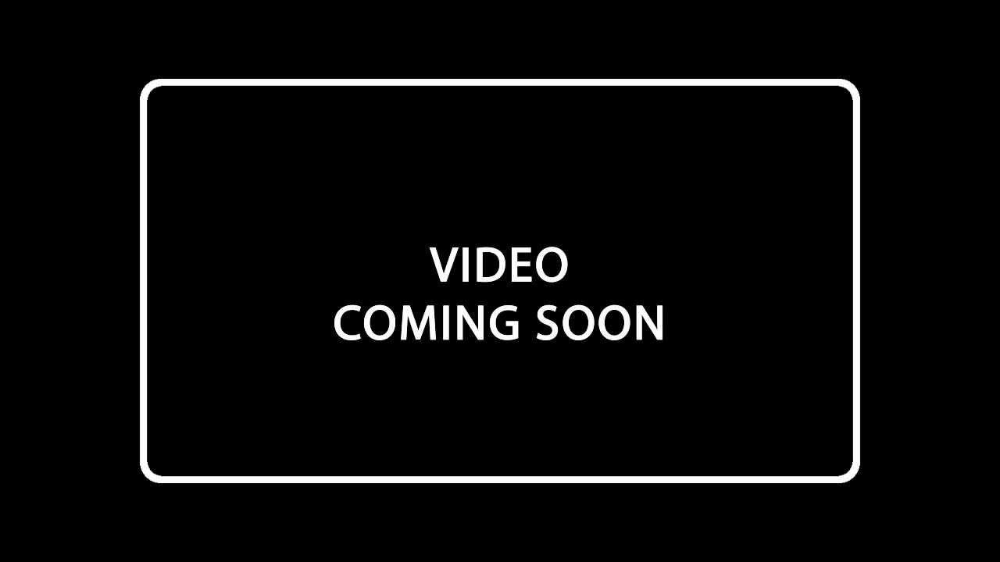

AUTHENTIC. POSITIVE. CHANGE.
Why are we here?
Our vision is to care for people by creating authentic, positive change to improve humanity and connection using evidence.
Who are we?

Dr. Renee Lim
- Medical Clinician - Locum doctor in emergency, Medicine, Geriatrics and Palliative Care
- Educator - Sydney University, UNSW - Curriculum, consultation skills programs, lecturer
- Communications Expert - Pam McLean Centre - Business Management, Course and content development, research and presentations, teaching, one on one development
- Engagement Expert - Consultant - Change management, staff development, Strategy, The Human Factor, creating communities, branding and marketing.
- Performer - Actor, Writer, Director, Video Production


Sonya Corcoran
Q: What do you get when you cross a Psychology Graduate with IT, UX, Education and Web Development? ***answer at the bottom*** With 10 years experience as an Educational Designer, Sonya spent seven of those at Sydney University. Working with trailblazers in faculties such as Medicine, Dentistry and Health Sciences; Sonya is always on the lookout for making the lives of both staff and students that much easier. With a gritty growth mindset and mission to bring about change for the better, Sonya set off to learn how to code and has since built several edTech apps. One app went on to win an award at the Reimagine Education Award Conference in 2015. Talk to her about: edTech, Assessment, Data Visualisations, Creative Coding. ANS: uɐɹoɔɹoƆ ɐʎuoS
LinkedIn Github